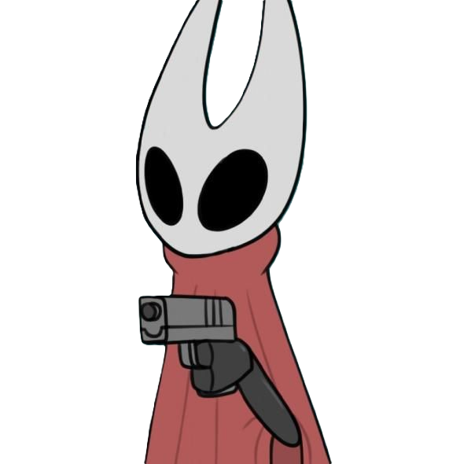
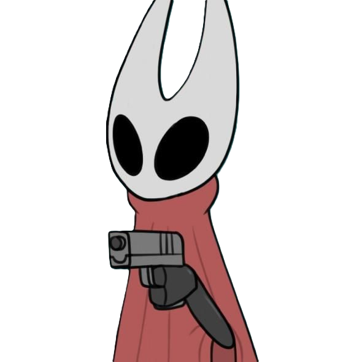
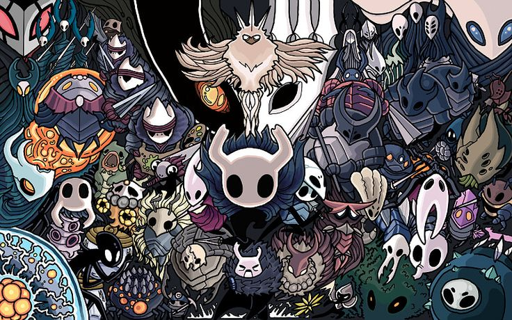

Bienvenue à Hallownest
Hollow Knight est un jeu d'aventure/action en 2D se déroulant dans le royaume souterrain de Hallownest. Vous incarnez un mystérieux chevalier masqué, un combattant solitaire armé de son épée, connu sous le nom de "Chevalier". Dès le début de l'aventure, vous plongez dans un monde vaste et dangereux, rempli de créatures étranges et de secrets enfouis. Le jeu vous propose une exploration libre, où chaque zone de Hallownest recèle de secrets, de boss puissants, et d'énigmes à résoudre. Au fil de votre aventure, vous rencontrerez plusieurs personnages clés, dont Hornet, une créature mi-humaine, mi-insecte. Hornet, tout en étant un adversaire redoutable, agit aussi comme une guide, vous poussant à affronter vos peurs et à découvrir les vérités cachées sur votre passé et sur Hallownest. Au cœur de cette exploration, vous serez amené à combattre, à résoudre des énigmes et à découvrir l'histoire de ce royaume autrefois prospère, aujourd'hui en ruine.
 

La Carte de Hallownest
Dans Hollow Knight, la carte du royaume souterrain de Hallownest est essentielle pour progresser et s'orienter. Au début du jeu, votre carte est très rudimentaire et vous devrez explorer pour la compléter. Voici quelques éléments importants concernant la carte :
- Cartographe : Le cartographe, Cornifer, se trouve dans différentes zones et vous vend des mises à jour de votre carte pour vous aider à naviguer. Vous devrez souvent trouver ses cachettes dans des endroits difficiles d'accès.
- Restorations de la carte : Les cartes sont incomplètes et vous devrez explorer pour les compléter, en trouvant des stations de cartographie et en utilisant des outils pour ajouter des détails à la carte.
- Les bancs : Les bancs permettent d'enregistrer des informations clés sur les zones explorées en les écrivant sur votre carte grâce à votre ancre et à votre plume.
- Zones : Chaque zone de Hallownest possède ses propres caractéristiques uniques, comme des ennemis différents, des pièges et des objets spéciaux. Utilisez la carte pour planifier vos explorations et éviter de vous perdre.

Ennemis et les Boss
Dans Hollow Knight, les ennemis et les boss jouent un rôle central dans l'expérience du jeu. Chaque zone du royaume de Hallownest est peuplée de créatures variées, allant de simples insectes hostiles à des ennemis plus redoutables, tous ayant leurs propres attaques et comportements uniques. Voici quelques éléments à connaître sur les ennemis et les boss dans le jeu :
- Les ennemis de base : En explorant Hallownest, vous rencontrerez de nombreux ennemis plus ou moins puissants. Certains sont des insectes communs, tandis que d'autres sont des créatures mystiques dotées de pouvoirs magiques. Ils peuvent vous attaquer en masse ou individuellement, rendant chaque rencontre différente.
- Les mini-boss : De nombreuses zones comportent des mini-boss, qui sont des ennemis plus puissants que les ennemis de base, mais qui ne sont pas aussi imposants que les boss majeurs. Les mini-boss permettent de tester vos compétences de combat et de stratégie tout en offrant des récompenses intéressantes pour les vaincre.
- Les Boss principaux : Ces créatures gigantesques et dangereuses marquent des étapes clés de votre progression. Chaque boss a des mécaniques de combat spécifiques qu’il vous faudra apprendre pour être vainqueur. Des personnages comme Hornet, The Radiance, ou The Grimm Troupe sont des exemples de figures imposantes qui offriront un défi de taille. Chaque affrontement de boss est une épreuve, avec des attaques complexes et des phases à maîtriser pour en sortir vivant.
- Les attaques et les stratégies : Pour vaincre les ennemis et les boss, vous devrez maîtriser l'art du combat. Cela implique l'utilisation de votre épée ("Nail"), de vos pouvoirs magiques (comme le "Destructive Dash"), et de votre capacité à esquiver. Certaines créatures peuvent être affrontées de manière frontale, tandis que d’autres nécessitent une approche plus stratégique, comme l’utilisation de Charms qui confèrent des pouvoirs supplémentaires.
- Les récompenses : En battant des ennemis et des boss, vous recevrez des âmes, des objets spéciaux et parfois des mises à jour de vos capacités. Ces récompenses sont essentielles pour progresser et vous rendre plus fort au fur et à mesure que vous explorez des zones de plus en plus dangereuses.
Les combats contre les boss sont l'un des éléments les plus excitants du jeu, chacun avec sa propre histoire, ses mécaniques et son design unique. Ces moments sont véritablement la clé de votre aventure à travers Hallownest !
